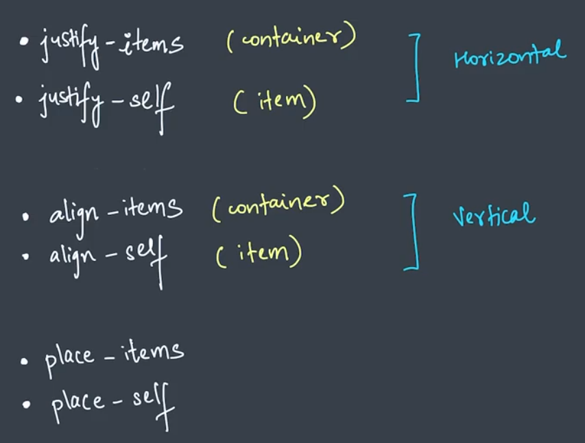

For better understanding you can inspect the webpage. In container div you can see some lines which are not created by us.
For all items.
For better understanding inspect the webpage and change the values given to justify-items.
For individual item.
For better understanding inspect the webpage and change the values given to justify-self.
For all items
For better understanding inspect the webpage and change the values given to align-items.
For individual item
For better understanding inspect the webpage and change the values given to align-self.
For all items both justify-items and align-items are same.
For better understanding inspect the webpage and change the values given to place-items.
For individual items both justify-items and align-items are same.
For better understanding inspect the webpage and change the values given to place-self.